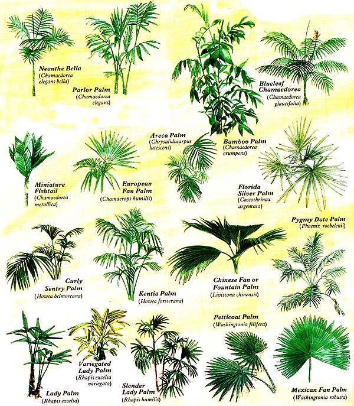
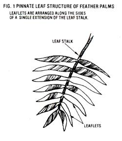
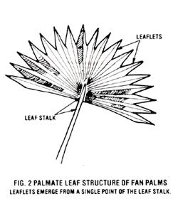

You'll bring a bit of the tropics right into your own home when you...
The mention of palms usually conjures up images of romantic South Sea Islands with exotic fruits, dazzling white sand beaches, crystal clear lagoons, and bronzed, flower decked dancers swaying against an ocean-blue sky. Unfortunately, many of us will never visit such fabled lands, but there's no reason why we can't bring those faraway isles to our own hearths and homes . . . by growing some tropical palms!
This elegant greenery-related to grasses and bamboo-is remarkably tolerant of neglect (in fact, it'll almost take care of itself) and relatively resistant to diseases and insects. Why, these hearty perennials are actually noted for their tolerance of "atrocities" such as low light levels, ,root crowded containers, infrequent watering, and air-conditioning.
What's more, few plant species in history have enjoyed the stature that palms have earned: Since early Egyptian and Babylonian cultures, they have been honored as principles, the "princes of plants". But their most valuable attribute-in the eyes of the "informed" gardener-may well be their wonderful versatility. With 210 genera and 2,780 species, the Palmae family (also known as Arecaceae) offers varieties native to warm and temperate climates alike. 'True, the majority come from Southeast Asia and tropical America, where they live -as the Arabs say-"with their feet in the water and their heads on fire". Others, though, take root as far north as Virginia and as far south as central Chile.
FEATHERS AND FANS
As you might expect, the very fact that they have such diversified habitats makes generalizing about palms rather difficult. Fortunately, however, a basic botanical division of the plants into "feather" and "fan" types-based on their leaf structure does provide a useful framework for exploring these exotics.
By and large, the most popular (and congenial) decorative palms are the feather types. These include the species of Chamaedorea, Chrysalidocarpus, Howea, and Phoenix. All have pinnate fronds that resemble large feathers or fingers (see Fig. 1). In fact, palms derive their name from this likeness to the human hand.
Most of the members of this first group will thrive in warm, indoor conditions . . .
where temperatures are between 62 ° and 65 °F at night and as high as 80 80' to 85'F during the day. While almost all are shade tolerant, several are shade-loving, so they provide tough and unusual foliage for deco rating that difficult north window. Other feather palms prefer the stronger light that's supplied by eastern or western exposures. South window settings, on the other hand, may prove too bright for many of
these evergreens. (If you choose such a sunny location, consider hanging a thin curtain over the window to filter out some of the light.) With these facts in mind, here's a selection of some of these perennial favorites or indoor gardening.
Areca (Chrysalidocarpus lutescens): Known to some as the "yellow butterfly palm", this Madagascar native-with its long, thin, draping leaves of a glossy, dark green hue, and green and golden stems ringed like bamboo-is one of the most graceful palms. A dense, cluster-forming variety, areca eventually becomes quite full. Indoors, it's one of the few palms that prefers a little water in the saucer beneath its pot.
Bamboo Palm (Chamaedorea erumpens): This suckering plant from Honduras looks more like a clump of bamboo than a palm (hence its name). The arching, paper like, dark green leaves located along reed like stems are prized mainly for their Oriental appearance.
Blue leaf Chamaedorea (Chamaedorea glaucifolia): Another bamboo like palm, this slow climber has long, narrow, gray green leaves that are very sparsely located along its stems.
Miniature Fishtail (Chamaedorea metallica): As one of the smallest palms, this tough and unusual plant is perfect for adding beauty to small spaces. Bearing a rosette of toothed, somewhat plaited, shiny green leaves (which fork only near their apexes) on a slender green stem, C. metallica gradually grows to about three feet in height.
Parlor Palm (Chamaedorea elegans): The well-known "dwarf mountain palm" is a favorite among indoor gardeners . . . and for good reason, since it tolerates all kinds of abuse! A fast grower-reaching to ten feet or more-with slightly transparent, featherlike fronds, the parlor palm blossoms into a full, bush like ornamental.
Neanthe Bella (Chamaedorea elegans bella): This miniature version of the parlor palm seldom grows taller than four feet indoors. Every bit as accommodating as its larger relative, nepen the bella flowers when it's quite young, and its numerous suckers make it easy to propagate.
Curly Sentry Palm (Howea 'belmoreana): The Howea variety of palms (sometimes spelled Howeia), a relatively new discovery to indoor gardeners, is native only to Lord Howe Island in the Pacific. The striking evergreendecked with wide-spreading, pointed, broad fronds-is gaining popularity, though it requires a bit of room . . . needs careful nurturing when young .
prefers a cooler environment (50° to 70°F) than do most other feather palms . . . and hates to be disturbed by, for example, repotting. Putting on a regally handsome display, the curly sentry is the Howea often found in hotel lobbies and the like, since this plant, once mature, is notably tolerant of abuse and low light.
Kentia Palm (Howea forsterana): This is another Howea that's widely kept for its tropical appearance and tolerant nature. While it grows more erect than the curly sentry, it's equally elegant and sturdy. You may find larger specimens rather tough on your pocketbook, though, since-because the seed requires about six years to become viablethis is one of the most difficult species to propagate.
Pygmy Date Palm (Phoenix roebeleni:): Sometimes called the "dwarf date palm", this airy, exotic plant has a dense globular crown of plume like leaves that arch in space. Though often suggested for very shady locations, it actually grows best if it receives some direct sun. The female trees frequently cluster and are easily propagated by division.
FANS FOR COOLNESS
If you're wondering about foliage that could adapt to the more difficult areas of your home spaces that are as chilly as 50° to 55 °F at night, while warming up to only 65° to 70°F in the daytime-you merely have to enter the world of fan palms.
Categorized by their palmate leaf structure (see Fig. 2), most fan palms enjoy cooler air. In addition, unlike feather palms, most members of this group require some direct sunlight. Popular species for indoor gardens include the Chamaerops, Coccothrinax, Livistona, Rhapis, and Washingtonia. Here's a sampling of some of the most popular specimens.
European Fan Palm (Chamaerops humilis): The only palm species native to Spain, the European comes in many forms It makes an excellent, low-spreading tub plant-growing to a yard in width-with thin, stiff leaves that range from light to dark green and are pointed at the tip.
Florida Silver Palm (Coccothrinax argentata): This small exotic-a warmthloving fan palm-is a delicate beauty, sporting star shaped leaves that are glossy green on top and silvery white underneath. As the species seldom grows taller than three feet, you'll probably find it one of the easier fan palms to accommodate.
Chinese Fan or Fountain Palm (Live istona chinensis): This spectacular variety from southern China has glossy leaves (they're more broad than long) that are cut into narrow, fringe like segments. Since its fronds can spread up to eight yards in diameter, the Chinese fan requires a lot of room. (If you don't have the floor space, you may want to try elevating it up on a shelf, so that the branches spread high enough to walk under!)
Lady Palm (Rhapis excelsa): A smaller, suckering species, the lady palm is an enduring classic that bears shiny, rigid, dark green leaves (divided nearly to the base into from three to ten segments). Unlike many other fan palms, it's a heavy feeder and accepts warm and cool temperatures alike.
Variegated Lady Palm (Rhapis excelsa variegata): This Japanese cultivar of the lady palm prefers homes at 68° to 80°F Though a slow grower, it's prized for the alternate ivory white and green bands that decorate its fronds.
Slender Lady Palm (Rhapis humilis): Not only is Rhapis humilis probably the best of the lady palms for indoor cultivation, it's also one of the daintiest. Prized for its ability to withstand cool or warm temperatures, it grows into a dense, clustering shrub with thin, reedlike stems and narrow, pointed leaves that are divided into 9 to 20 segments.
Petticoat Palm (Washingtonia fil ifera): This is the "desert fan palm" from the arid Southwest. Its thorny, plaited, gray . green leaves are lined with long, threadlike fibers and do indeed resemble a petticoat. Those of you who live in dry, hot climates may want to plant this type outdoors.
Mexican Fan Palm (Washingtonia robusta): The enormous, wide-spreading, glossy, bright green foliage of this palm is magnificent to behold. Though the Mexican fan's usually planted outside, if raised indoors-with bright sunlight, warm temperatures, and lots of space-it can be quite breathtaking.
A GROWING PLAN
If you want to learn the nuts and bolts of caring for a particular palm, you should, of course, know what variety you're raising and what its eccentricities are (although some palms have such similar appearances that identifying your plant may be no small task). Still, the following guidelines on care can generally be relied upon.
Cold: To begin, whether your houseplant is fan or feather, one thing's for sure: It won't like cold air. Keep it out of drafts. Sudden winter blasts coming through an open door or window may cause yellow leaves, browning, and eventual leaf loss.
Light: A good rule of thumb when raising a palm (or any other houseplant) is to give it as much light as possible without burning the leaves. In general, those with thick, tough, leathery foliage prefer several hours of direct sunlight each day, while those with thin, semitransparent fronds do best with medium exposure.
Watering: Most of these exotics like neither to dry out completely nor to sit in water too long (though they may tolerate either condition). For optimum growth, it's best to water thoroughly when the top one quarter to one-half inch of soil becomes dry to the touch. Once you've quenched a palm's thirst, let the pot drain . . . and empty the saucer beneath it. And keep an eye out for brown tips on the leaves: They may be a signal that the plant has been sitting in water too long.
Feeding: Since watering leaches nutrients from the soil (no matter how good your medium), you'll eventually need to fertilize your plants. Always keep in mind, though, that most palms are light feeders. Hence a mixture of diluted fish emulsion (a highnitrogen fertilizer)-given only a few times in the summer and never in winter-usually proves sufficient.
Transplants: Palms like cozy containers, so they seldom need reporting. To determine when it is time to provide more growing space, look for such signs as a quick-drying plant (the need for too-frequent waterings), browning fronds, or a pot so small compared with the palm that the evergreen looks unbalanced.
When you transplant, use a container that's larger than the old one by a couple of inches (at most) and fill the extra space with a mixture of ground-up greenhouse peat or a package of soil mix (two parts) . . . with perlite and vermiculite (one part each) added for drainage. And wet your princes before you switch containers. Unlike many other houseplants, palms like to be watered thoroughly both before and after being moved.
Grooming: Keeping your palms well groomed and near other healthy plants is the best way to ward off their major enemies: spider mites, scale, and mealybugs. Tend them by trimming any brown or yellow tips with sterilized manicure scissors. If a whole frond has yellowed, remove the dying part by simply cutting it off at the base. (Once yellow, the leaf won't turn green again.) Don't worry when an occasional leaf or two becomes discolored. That's just part of the natural shedding process. However, a severe loss of foliage may indicate chilly drafts, too much light, excessive fertilizer, or inappropriate watering.
Finally, if the foliage gets dusty, it can be cleaned with a damp cloth moistened with clear water. But stay away from commercial plant cleansers. Despite advertising claims, products designed to make leaves shine are sometimes quite harmful, since they clog the pores (stoma) and disrupt the plant's natural transpiration.
Pests: Palms are remarkably resistant to insect infestations, but if you do get a bug problem, you may be able to eliminate the pests simply by letting loose an army of red ladybird beetles. Though the hungry horde can't catch insects in flight, they'll do a job on all of the nymphs, eggs, and crawling bugs they stumble across. This tactic is practically effortless . .. providing, of course, that you have a supply of ladybugs handy!
A more time-honored approach to pest eradication is to wipe the plant down every day or two with warm, soapy water. (Use a laundry soap, not a detergent, and thoroughly wash any residue away with lukewarm water.)
To prevent infestations in the first place, you should periodically hose down your palms. Do this in the early morning, so the foliage will be dry by nightfall . . . and, in the winter, limit such rinsings to no more than once every six weeks, since lingering moisture on the leaves makes palms susceptible to fungi.
Propagation: Two common methods of propagation are totally unsuited to palms . . . namely, air layering (the distribution of palms' sensitive inner tissue precludes this option) and tip cutting (which can damage the "terminal buds"-which are responsible for the plants' growth activity-and cause the palms to die).
However, since many species produce offshoots branching from the base of the plant or suckers forming below the soil, division from the "mother" is often the easiest means of producing additional plants.
Suckers can be dug up (make sure to retain all the roots) and .planted directly in soil, while offshoots can be divided with a sterile, sharp knife (just above the soil level) and rooted either in a pot of peat moss and perlite or simply in water . . . and then transferred to soil once the roots have developed. Gentle heating of the bottom of the container will help promote root formation, and an increase in humidity (by either misting the plants daily or placing them in a plastic tent for several weeks) will also help the little plants become established.
Reproduction from seed is the most common method used . . . and from the abundant supply of palms on this planet, you might say that it's fairly reliable. Gathering your own seed, however, will promise uncertain results at best. For one thing, some species are dioecious (having separate male and female plants), in which case both types are needed and you'll have to hand-pollinate the female in order to produce seed. In the second place, since any seed must be ripe and planted at precisely the proper time to be viable, it becomes critical to know the requirements of your species. For all these reasons, it's often easier to obtain seed from commercial sources.
These little nuggets can be sown in sterile clay pots with broken chips in the bottom to promote drainage. A good medium to use is leaf-mold soil or peat moss, mixed with equal parts of loam and sand. This mix is then pasteurized by bringing the soil temperature to 140 ° to 180 °F with steam or other moist heat, to prevent damping off. (To kill undesirable insects, weed seeds, and disease organisms, sterilize the soil at 212°F for 30 minutes.)
To plant, water the medium thoroughly, then sow the seed thinly on top and cover with soil to a depth twice the seed's thickness. Next, cover the container with glass or plastic wrap and place it in a shady spot . . . until the seedlings start to break ground. Water them when necessary by misting or by placing the pot in a pan of water. Gentle bottom heating will also help the seed to germinate and, again, aid root development. Once the seedlings are established, they can be weaned gradually to stronger light and then, when they're large enough to handle, transplanted.
TROPICAL PLEASURES
Now that you know some of the palm varieties available for indoor use-and how easy they are to cultivate-there's no reason to delay bringing a touch of the tropics into your home. After all, whether you're a seasoned connoisseur of these tropicals, a weekend gardener with a taste for the exotic, or a purple-thumbed bumpkin with a budding curiosity . . . the islands can be yours, and the natives are friendly.
EDITOR'S NOTE: The Geo. W. Park Seed Company, Inc. (Dept. TMEN, Cokesbury Road, Greenwood, South Carolina 29647) carries a variety of mail-order palm seeds, and Jerry Horne (Dept. TMEN, 10195 Southwest 70th Street, Miami, Florida 33173) specializes in mail-order palm plants. Each offers free catalogs. The author also recommends Exotic Plant Manual: Exotic Plants to U.,#? With by Alfred Byrd Graf (fifth edition, Roehrs Company, $37.50) to anyone interested in additional information on palms.
|
 |
 |
 |